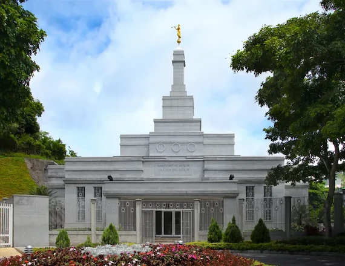

Temple Album
Home
Old
New
Large
Small
Home

Salt Lake Temple
Manti Temple
Logan Temple
St. George Temple
Oakland Temple
Washington D.C. Temple
Rome Italy Temple
Paris France Temple
Tokyo Japan Temple